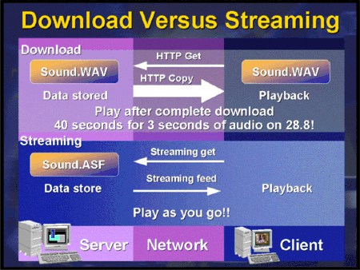
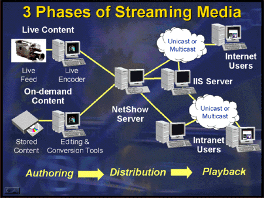
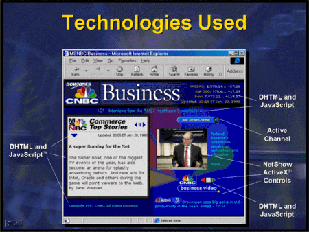

|
| ||
|
| ||
George Young and Lanie Kurata
Based on a presentation by Hadi Partovi and Mike Beckerman
Microsoft Corporation
February 11, 1998
Contents
Introduction
What is Advanced Media?
Opportunities -- Why Use Advanced Media?
Challenges and Solutions
Building Blocks for Media Solutions
Easy DHTML
Advanced DHTML
Active Channels
Streaming Media with Windows Media Technologies
CNBC-Dow Jones Business Video
Conclusion
Additional Resources
As the Internet has become more and more an indispensable part of doing business, the competition for user eyeballs and loyalty has increased. Web developers face the task of designing and implementing ever-more attractive and interactive sites, while dealing with internal resource constraints and external limitations, such as bandwidth and user-platform variety.
This article discusses how Web developers can make use of a few key technologies and tools which overcome these constraints and limitations to deliver interactive, rich, compelling, and efficient Web sites. We discuss the opportunities and challenges of developing these advanced-media solutions, and introduce a set of solutions to make them achievable. These solutions include both "easy" and "advanced" Dynamic HTML (DHTML), Active Channel™ technology, and the recently-announced Microsoft Windows Media Technologies. Along the way, we take a look at a few popular and compelling sites on the Web, such as LiveWired, news.com, and CNBC Dow Jones, all of which use advanced media. We conclude with an extensive list of links to additional resources.
This article is based on the presentation "Building Advanced-media Solutions" delivered by Hadi Partovi and Mike Beckerman at Web Tech·Ed, January 25-28, 1998, in Palm Springs, CA. Hadi Partovi is a member of the Internet Explorer Product Unit, and Mike Beckerman a member of the Windows Media Technologies Product Unit, at Microsoft. The "Solutions" series of presentations were geared towards demonstrating the use of multiple, complementary, integrated technologies to solve particular business needs.
(Microsoft will present additional Web-related technical-solution sessions in June at Tech·Ed 98 in New Orleans. See the Microsoft Events  site for details and registration information.)
site for details and registration information.)
Advanced media involves creating both client-side and end-to-end Web solutions which take advantage of the standards-based work of Microsoft and other companies. Recent developments such as DHTML, Channel Definition Format (CDF), and Active Streaming Format (ASF) empower developers to create more compelling Web-based solutions with greater ease and integration than ever before.
Advanced media is:
Building advanced-media solutions is usually not an end itself, but rather a means to other ends. Web developers can take advantage of advanced media to generate revenue in a number of areas.
Enrich the user experience. Advanced media can make the user experience at your site more engaging and interactive. Sites such as the Bloomberg Channel  use Dynamic HTML to give the user various sets of information -- news, weather, sports, financial -- without having to make a round-trip to the server to get each set.
use Dynamic HTML to give the user various sets of information -- news, weather, sports, financial -- without having to make a round-trip to the server to get each set.
Build loyalty via personalized content. Sites using advanced media can build user loyalty by allowing personalized views. The Microsoft Internet Start page  allows users to select which types of information they want on their "Start Page," and automatically updates that personalized information.
allows users to select which types of information they want on their "Start Page," and automatically updates that personalized information.
Generate interest in other media properties. Advanced media can boost demand for other revenue-generating media properties. The Web site for the movie The Postman  used live streaming video to broadcast over the Internet the filming of the movie as a means of increasing demand for the final product.
used live streaming video to broadcast over the Internet the filming of the movie as a means of increasing demand for the final product.
Deliver online advertising. Online advertising created with advanced media like DHTML can be more compelling to endusers, drawing more "bill-able eyeballs" to content. The LiveWired  site weaves together news, features, and ads for an interesting and unique experience that pushes the media envelope of the Web experience.
site weaves together news, features, and ads for an interesting and unique experience that pushes the media envelope of the Web experience.
Reach higher bandwidth audiences. For audiences who benefit from higher bandwidth, advanced media can deliver wonderfully rich content, such as streaming media via Microsoft Windows Media Technologies. The CNBC Dow Jones  site uses a mix of streaming media, Active Channel technology, and DHTML to deliver real-time and archived business audio and video, as well as text, to the Windows Media Technologies client on users' desktops.
site uses a mix of streaming media, Active Channel technology, and DHTML to deliver real-time and archived business audio and video, as well as text, to the Windows Media Technologies client on users' desktops.
Corporate communications. Geographically-dispersed organizations can use advanced media such as streaming audio and video, as well as slides, to reach employees scattered around a city or around the globe.
Challenges to building rich, compelling Web sites have ranged from the plethora of competing formats, to capability differences among Web browsers and versions, to difficulties in authoring. These challenges and their solutions are outlined in the table below.
| Challenge | Solution |
| Reach: Many browsers, versions, and platforms. | Microsoft has shown tremendous commitment to open standards in the past three years, and is now the industry leader in the implementation of almost all the latest Web standards, such as HTML, CSS, and XML. Auto-degrading HTML, which won't "break" pages in other browsers.
Auto-detection of browser in Internet Information Server |
| Confusion: Too many media formats; each format has its own player. | The Windows Media Technologies Media Player is the universal player, handling all common media file types, including ASF, WAV, MID, MPG, MP3, RAM, and RA |
| Bandwidth limitations | Offline browsing allows users to download pages once for use when disconnected from the Internet or a corporate intranet.
Smart streaming allows video and audio streams to degrade gracefully when bandwidth limitations prevent 100 percent transmission of the content |
| Authoring is difficult | Quality tools are available, including Microsoft FrontPage® and third-party tools such as Elemental Drumbeat, Pictorius Inet, and MacroMedia DreamWeaver |
There are a number of great technologies from Microsoft and other companies that can serve as solid building blocks to creating advanced-media solutions. We'll take a look at three: DHTML, Active Channels, and Microsoft Windows Media Technologies streaming media. These building blocks allow you to build compelling sites which overcome the challenges above.
"Easy" DHTML effects are those that can be implemented with a minimum of script or with a DHTML-generating tool, such as Microsoft FrontPage 98. These effects add user feedback and enhanced navigation. They enrich existing pages, and downgrade gracefully so that the pages work in other browsers. Examples of these effects include mouseovers, outlining, and transitions.
Mouseovers. Use this effect to change the color of a link text (or that of any other element) to provide additional feedback to the user. Pages that use this effect include C/Net's http://www.news.com  and http://home.microsoft.com/
and http://home.microsoft.com/  :
:
<A href="http://www.microsoft.com/sitebuilder/"> <SPAN STYLE="color:black;" ONMOUSEOVER="this.style.color='red'" ONMOUSEOUT="this.style.color='black'" LANGUAGE="JavaScript"> Site Builder Network</SPAN></A>
(Sample requires Internet Explorer 4.0  )
)
For more on mouseovers and mouse events, see How to Manipulate Text Effects in Response to Mouse Events in the DHTML, HTML, and CSS section of Workshop.
Outlining. Use this effect to enhance navigation by providing an expandable outline. This effect can be created with no code and one mouse click using Microsoft FrontPage 98  :
:
<UL>
<LI STYLE="cursor:hand;" ONCLICK="foo.style.display =
(foo.style.display=='none')?'':'none'"
LANGUAGE="JavaScript">Home</LI>
<UL ID="foo" STYLE="cursor:default;"
ONCLICK="window.event.cancelBubble=true;"
LANGUAGE="JavaScript">
<LI>Hello</LI>
<LI>Goodbye</LI>
</UL>
</UL>
(Sample requires Internet Explorer 4.0 For more on outlining, see Create a Dynamic Table of Contents in the DHTML Tutorials section of Workshop.
Page transitions. Use this effect to add a fade, dissolve, checkerboard wipe, or other transition into your page, much the same as in a Microsoft PowerPoint® presentation. The code for this case is added to the <HEAD> section of your HTML page. This effect can also be added with a couple of mouse clicks using Microsoft FrontPage 98.
<META http-equiv="Page-Enter" content="revealTrans(Duration=2.0,Transition=3)">(Sample requires Internet Explorer 4.0
For more on page transitions, see Filters and Transitions pages of the DHTML, HTML, and CSS section of the MSDN Online Web Workshop.
Whereas "easy" DHTML involves the incremental application of a relatively simple effect to a page, "advanced" DHTML goes much deeper than simple effects. Advanced users of DHTML can build an entire user interface in HTML and script, and take complete control over the Web page with dynamic access to styles, text, layout, data, and events.
Dynamic HMTL in Internet Explorer 4.0 is based on two world-wide industry initiatives, the W3C Document Object Model proposal and the W3C Cascading Style Sheets standard. In addition, you can achieve special multimedia effects via DirectAnimation and access extended multimedia capabilities via components.
An interesting example of the use of advanced DHTML is the LiveWired  site. Taylor, a LiveWired Design Engineer, was asked about the benefits of using DHTML. "We had a problem with HTML," said Taylor, who uses only one name. "We couldn't get the type of presentation we get in the (print) magazine Wired. Dynamic HTML allows (control over) design and layout aspects." DHTML allows LiveWired to make extensive use of text instead of graphics, which makes content easier to edit and uses much less bandwidth.
site. Taylor, a LiveWired Design Engineer, was asked about the benefits of using DHTML. "We had a problem with HTML," said Taylor, who uses only one name. "We couldn't get the type of presentation we get in the (print) magazine Wired. Dynamic HTML allows (control over) design and layout aspects." DHTML allows LiveWired to make extensive use of text instead of graphics, which makes content easier to edit and uses much less bandwidth.
Dynamic font sizing. One of the many DHTML features of LiveWired is dynamic sizing of fonts as a function of browser resolution. LiveWired sets a base font size (40 pixels) for the target width of 1024 pixels, and uses a simple DHTML statement to adjust the font size for other resolutions. Here is a simplified version of the code:
<SCRIPT LANGUAGE="JavaScript"><!--
document.body.style.fontSize =
40 * (document.body.offsetWidth / 1024)
//--></SCRIPT>
(Sample requires Internet Explorer 4.0 A number of quality tools from Microsoft and other companies are available to ease the creation of advanced DHTML. These include:
NOTE: Some of these third-party tools are available at a discount or on a free-trial basis to MSDN Online members. Check the MSDN Online Tools area for details.
Internet Explorer channels created with Active Channel technology are an advanced-media feature which organizes Web pages and allows them to be updated automatically and regularly, and read offline. Channels created with Active Channel technology are described using CDF (Channel Definition Format), the first commercial application of Extended Markup Language (XML).
Turning your Web site into an Active Channel involves relatively little work, even as it enhances your branding opportunities and ensures that your users have the latest version of your site. Active Channels can be created by hand using any text editor, or by using a "wizard" such as those in Microsoft FrontPage 98, Microsoft Visual InterDev™.
For more about Active Channel technology, including articles which walk you though creating your own channel, and instructions on how to get your channel listed in the Microsoft Channel Guide, see the "Additional Resources" section at the end of this article.
The introduction of streaming technology has made the use of multimedia much more common on the Web, particularly in online news sites such as MSNBC, CNN, and FoxNews. Approximately 4,000 Web sites offered video clips in 1996. This number tripled to 12,000 in 1997, and is expected to triple each year for at least the next three years. (The Microsoft Windows Media Technologies site has details on this study.)
Before the advent of streaming technology, not only did the entire media file have to be downloaded prior to being viewed; the right helper application had to be installed on the user's machine, along with the correct decoding algorithm (called codec). Today, with streaming technology, real-time viewing of content is made possible, as it transmits over the network. The user hears or sees a progressive rendering of sound or images as it arrives on the client computer. (Refer to Figure 1 below.)

Figure 1. The difference between a regular download of an audio file versus the use of streaming technology
While people have come to associate television or radio broadcasting with simple and effortless reception of multimedia content, data streaming with Windows Media Technologies can make it just as easy for users to receive Internet broadcasts.
Windows Media Technologies content is created using the low-overhead file format known as Advanced Streaming Format (ASF). Although ASF-compatible software is required to create ASF data streams, Windows Media Technologies is bundled with a variety of tools that enable ASF streams to be captured in real time, stored to a file, and converted from existing video or audio formats (such as AVI or WAV). The Windows Media Technologies Client, also known as the Windows Media Player, is available as a standalone application and as an ActiveX control that can be embedded in Web pages using the <OBJECT> tag. Conversely, Windows Media Technologies Services, which consists of services available in Windows NT® Server, can store and deliver either live or on-demand audio, video, and other files to a user's desktop.
The Windows Media Technologies site has a complete listing of new features  for Windows Media Technologies. There is also an FAQ
for Windows Media Technologies. There is also an FAQ  .
.
In a nutshell, here's how the Windows Media Technologies streaming-media process works:

Figure 2. The three phases of streaming media over the Internet: authoring, distribution, and playback
Streaming media on the Internet poses a few challenges to Web authors trying to deliver more compelling content to users. The table below outlines NetShow's solution to each of these challenges.
| Challenge | Solution |
| Reaching the broadest variety of browsers, operating systems and platforms | Windows Media Technologies provides support for multiple browsers and platforms, including Unix. See Reaching the Broadest Audience below to see how this is done. |
| Providing comprehensive delivery modes | Windows Media Technologies supports multicasting for efficient content delivery, and allows streaming media across a firewall. |
| Simplifying access to media, i.e. having to install a separate player for each media format | Windows Media Technologies provides a universal player that supports multiple media formats, eliminating the need to download different players to view or listen to different file formats. |
| Delivering a high-quality user experience | "Smart streaming" in Windows Media Technologies allows content delivery to adjust automatically to the actual connection rate users experience. Although a user may have a 28.8K modem, the actual connection may be operating at a slower speed. Smart streaming allows Windows Media Technologies to obtain the best performance, regardless of the current network connection rate. |
Inserting the Windows Media Player in an HTML page is as easy as adding the following lines of code to your page. Note the use of both the <OBJECT> and <EMBED> tags that allow the code to work in both Internet Explorer and Netscape. Additionally, the <A HREF> link at the bottom provides a link to the stand-alone player for browsers that support neither the <OBJECT> nor the <EMBED> tags.
<OBJECT ID=nsplayer
WIDTH=160 HEIGHT=128
CLASSID="CLSID:2179C5D3-EBFF-11CF-B6FD-00AA00B4E220"
codebase=
http://www.microsoft.com/windows/windowsmedia/download/en/nsdsinf.cab#Version=5,1,51,115
standby= "Loading Windows Media Technologies Player Components…"
type="application/x-oleobject">
<PARAM NAME="FileName" VALUE="http://server/file.asx">
<EMBED type="video/x-ms-asf-plugin"
pluginspage=http://www.microsoft.com/windows/windowsmedia/download/plaer.htm
filename=http://server/file.asx
src=http://server/file.asx
ControlType=1
Width=160 Height=128>
</EMBED>
</OBJECT>
<BR>
<A href="http://server/file.asx">click here to view outside the browser.</A>
Windows Media Technologies supports customization of content using ASX metafiles, a new and improved version of ASX files that use XML-based syntax, which shares many elements with Channel Definition Format (CDF).
The information you can specify in an ASX file includes:
<ASX Version = "3">
<Entry>
<Ref href="mms://nscontent/events.asf">
</Entry>
</ASX>
A simple ASX file with each of the elements above included would look something like the following code. Notice how this sample combines two pieces of content with two <ENTRY> items. The meta-data information, such as the title and copyright information, actually show up in the client UI, just below the VCR-type controls to manipulate the player.
<ASX Version="3">
<TITLE>JTM Plan for '98</TITLE>
<COPYRIGHT>1998 Micro Widget, Inc.</COPYRIGHT>
<MOREINFO href="http://website/welcome.htm">
<!--Start with short intro about accessing other info -->
<ENTRY>
<REF href= "mms://nscontent/events.asf" />
<TITLE>Learn more about available presentations</TITLE>
<MOREINFO href= "http://website/events.htm" >
<ABSTRACT>Click here to find out more </ABSTRACT>
</MOREINFO>
</ENTRY>
<!--The featured content -->
<ENTRY>
<REF href= "mms://nscontent/wjtm.asf" />
<MOREINFO href= "http://website/events2.htm" />
</ENTRY>
</ASX>
ASX files can also be dynamically generated using Active Server Pages technology (ASP) or Common Gateway Interface (CGI). Simply specify a URL pointing to an ASP (instead of an ASX), and use ASP to dynamically select streams at run time:
One example of the kind of Web-based business Windows Media Technologies is fostering is the CNBC-Dow Jones Business Video  service. Because Windows Media Technologies allows content providers to set up a very large network of distribution, CNBC has deployed a service that actually gives customers live video and audio coverage of late-breaking business information right at their desktops.
service. Because Windows Media Technologies allows content providers to set up a very large network of distribution, CNBC has deployed a service that actually gives customers live video and audio coverage of late-breaking business information right at their desktops.
As a company that generates revenue based on a subscription model, it is imperative that CNBC-Dow Jones Business Video delivers compelling content to its customers. Greg Harper, the company's Chief Technologist, outlined challenges that led the company to Windows Media Technologies for an end-to-end streaming media solution. Among them:
With the combined power of Dynamic HTML and Windows Media Technologies, CNBC was able to deliver what it set out to do. Figure 3 is a snapshot of the CNBC site, pointing out the various technologies used to build an advanced-media solution. Here's how the site implemented some of its features:

Figure 3. The CNBC-Dow Jones site
Using a combination of DHTML, Active Channel technology, and Windows Media Technologies, it is easy to incorporate advanced-media capabilities into an existing Web site to achieve a richer, compelling, and more interactive effect. Web authors are excited about the ease of implementation and efficiency provided by the combination of these key technologies, while customers appreciate the enriched user experience. Microsoft's continued commitment to open standards and multiple-platform support allows content providers to focus on authoring without sacrificing audience reach, while delivering the highest quality streaming media solutions with Windows Media Technologies.
Did you find this material useful? Gripes? Compliments? Suggestions for other articles? Write us!
© 1999 Microsoft Corporation. All rights reserved. Terms of use.